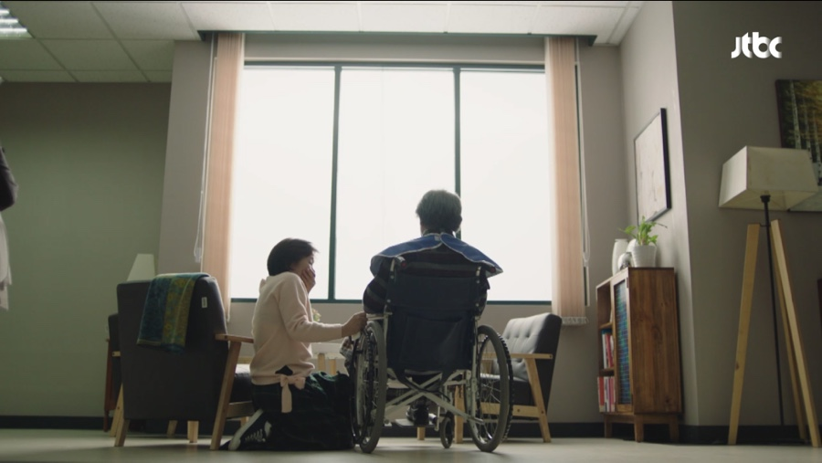
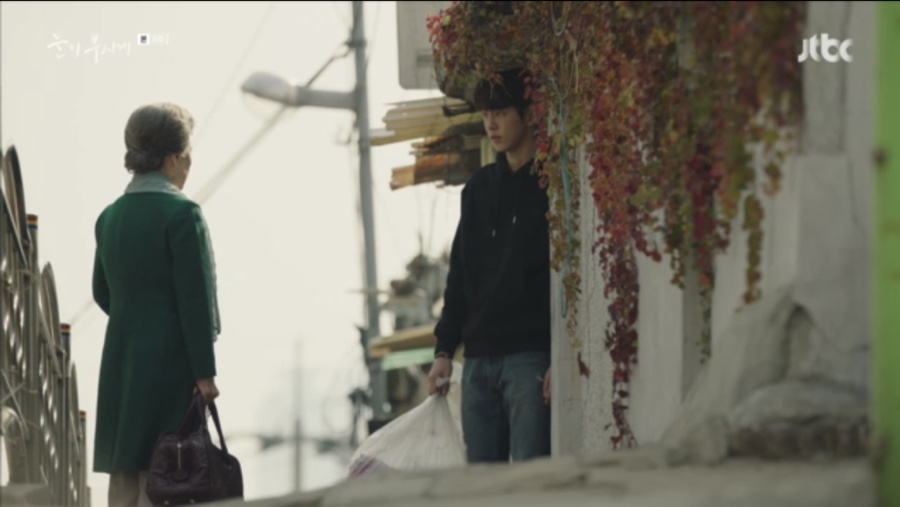
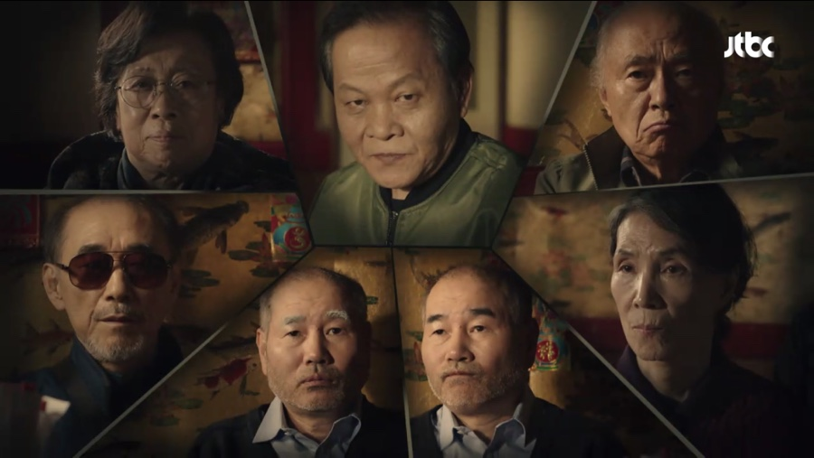
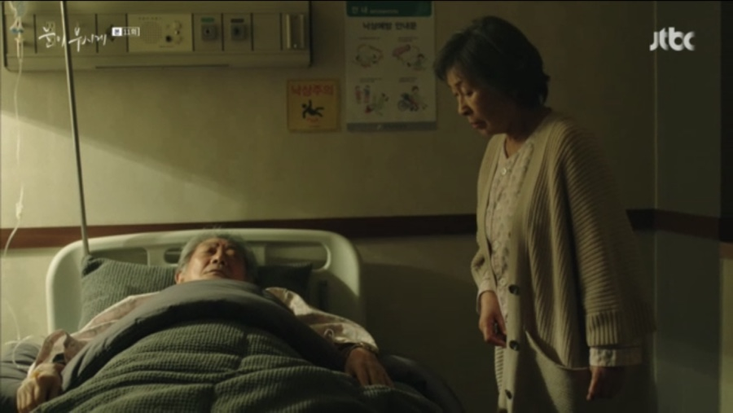
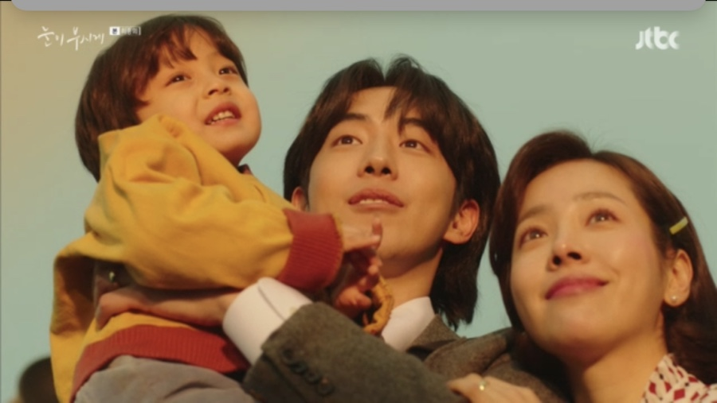

7~12회차 줄거리
|  | 7화 자신이 버린 시계와 다시 재회하게 된 혜자(김혜자). 게다가 고장 난 줄 알았던 시계가 다시 움직인다는 것을 깨닫고 소스라치게 놀라고... 혜자는 시계로 모든 것을 되돌릴 수 있다는 생각에 시계를 되찾기로 결심한다. 한편, 준하(남주혁)는 문득 혜자에게 혜자(한지민)의 안부를 묻는다. 하지만 자신이 찾는 사람이 눈앞에 있는 것도 모른 채, 준하는 홍보관 분위기를 어수선하게 만드는 혜자에게 더 이상 찾아오지 말아 달라 이야기를 하는데... |
| 8화 모든 것을 체념하고 삶을 포기했던 준하(남주혁)는 혜자(한지민)를 생각하며 어지러웠던 생활을 정리하고 떠날 결심을 한다. 혜자(김혜자)는 준하를 곁에서 말없이 지켜보며 자신도 잃어버린 시간에 대한 미련을 떠나보낼 준비를 하고... 한편, 미국에 있는 아들에게 편지를 보내고 있다는 준하의 거짓말을 철썩 같이 믿고 있던 샤넬할머니(정영숙). 결국 찾아오지 않는 아들을 보기위해 직접 미국으로 가려 하는데... |  |
|  | 9화 샤넬할머니(정영숙)가 사망했다는 소식을 듣고 혜자(김혜자)와 준하(남주혁)는 큰 충격을 받는다. 샤넬할머니와 가깝게 지내던 준하는 조사를 받게 되지만 그녀의 행적과 자신의 알리바이를 말하지 않고 입을 굳게 다물고... 게다가 샤넬할머니가 가입한 사망보험의 보험금 수령자가 준하라는 것이 밝혀지며 혜자를 비롯한 두 사람을 아는 모든 이들이 혼란에 빠지는데... |
| 10화 겉으로 티내진 않지만 혜자(김혜자)는 떠난 준하(남주혁)가 그립다. 그런데 우연히 들린 준하의 집에서 여행 가방이 그대로 남아있는 것을 보고 혜자는 준하가 출국하지 않았다는 사실을 알게 되고... 한편, 준하의 소식을 알기 위해 홍보관을 찾은 혜자는 희원(김희원)이 사망보험에 가입된 노인들만 야유회를 데리고 간다는 사실에 수상함을 느끼는데... |
|
|  | 11화 기나긴 꿈에서 깨어난 혜자(김혜자). 눈이 부셨던 혜자의 기억 속엔 준하(남주혁)와 준하와의 추억이 담긴 시계가 있었다. 그리고 오랜 시간이 지난 지금, 드디어 혜자는 시계의 정체를 알고 있는 사람과 마주하게 되는데... |
| 12, 최종화 뒤섞여 있는 기억을 담담히 정리해나가는 혜자(김혜자). 하지만 길고 길었던 인생을 온전히 기억해내기가 쉽지만은 않다. 그리고 어머니를 조금씩 이해하기 시작한 아들(안내상)은 혜자에게 언제가 가장 행복한 시간이었나를 묻고... 혜자는 긴 인생에서 가장 행복했던 시간에 대해 입을 여는데... 여러분의 가장 눈부셨던 시간은 언제인가요? |
 |